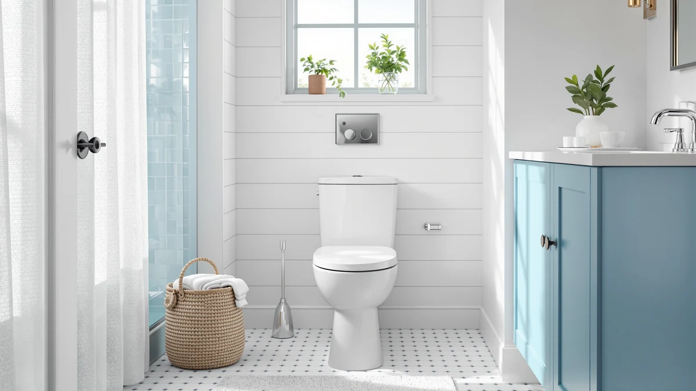

How to Clean One Piece Toilet (2026)
Prices and picks verified as of August 2026. Independent, reader-supported reviews.


Things to Know Before You Buy
- Learning how to clean a one piece toilet takes about 25 minutes once a week. The seamless design cuts down on hidden crevices, but the tank lid seam, hinges, and trapway still trap grime.
- Order matters. Clean top to bottom and save the bowl for last, since it holds standing water and needs the longest dwell time for cleaner to work.
- Vinegar loosens mineral rings that bleach leaves behind. Hard water areas benefit from a vinegar soak every few cleanings, even if you use a bleach-based cleaner the rest of the time.
- Skip abrasive pads on the bowl's glaze. Scouring pads and steel wool scratch the surface, and scratches trap more grime than they remove.
- A daily 30-second wipe cuts your weekly deep clean in half. Wiping the seat and rim after each use keeps stains from setting before your next full clean.
How to clean one piece toilet surfaces the right way comes down to five steps done in order: clear the area, apply the right cleaner, scrub where grime hides, wipe every surface, and dry it before anyone sits down again. Skip the order and you end up scrubbing a bowl that's already dry, or wiping a tank lid with the same cloth you used on the rim.
A one piece toilet has an advantage over a two-piece model because the tank and bowl are molded as a single unit, so there's no seam between them for waste and moisture to seep into. That doesn't mean it cleans itself. Grime still collects under the seat hinges, in the trapway, and along the base where the toilet meets the floor. This guide walks through the exact steps, supplies, and timing that get a one piece toilet properly clean without damaging the glaze or the seat mechanism.
What You'll Need
- Supplies: toilet bowl cleaner, distilled white vinegar, and microfiber cloths
- Tools: a toilet brush and a pair of rubber gloves
You likely already own most of this. If you're cleaning a one piece toilet for the first time in a while, buy a fresh toilet brush too. A worn-out brush head moves grime around instead of lifting it.
Step 1: Clear the area and put on gloves
Move bath mats, the trash can, and any clutter away from the base of the toilet. Grime and cleaner splash further than you'd expect once the brush gets going, and a mat sitting nearby will pick up moisture and start to smell.
Put on rubber gloves before you touch the bowl or open any cleaner. Toilet water and the surfaces around it carry bacteria you don't want on your hands, and several cleaners irritate skin with repeated contact. If you're figuring out how to clean a one piece toilet for the first time, this is also the moment to flush once so you're working with a fresh bowl of water rather than a stagnant one.
Step 2: Apply cleaner to the bowl and let it sit
Squirt toilet bowl cleaner under the rim, working your way around the full circle so it drips down the inside walls and into the waterline. If you're dealing with heavy mineral staining, distilled white vinegar works as well as most commercial cleaners and won't leave a chemical smell behind.
Let the cleaner sit for 5 to 10 minutes. This dwell time matters more than how hard you scrub afterward. It gives the product time to break down mineral deposits and organic buildup so the brush lifts it away instead of smearing it around the bowl.
Step 3: Scrub the bowl, rim, and jets
Angle the toilet brush under the rim first, since that's where grime builds up fastest and where most people skip. Push the brush into the flush jets around the rim's edge, then work it down into the trapway at the bottom of the bowl.
Scrub in short, firm strokes rather than one long pass. Flush partway through if the water looks cloudy, then finish the bowl before you move on. Avoid steel wool or abrasive scouring pads here. They scratch the porcelain glaze, and a scratched bowl holds onto stains faster than a smooth one.
Step 4: Wipe down the tank, lid, and exterior
Dampen a microfiber cloth with cleaner or vinegar and wipe the tank lid, the tank body, and the seam where the tank meets the bowl. Because a one piece toilet is molded without a separating seam, this area collects less grime than on a two-piece model, but dust and water spots still settle there.
Wipe the sides of the bowl and down to the floor. If your model has a bidet or electronic seat, keep cleaner away from the control panel and wipe that section with a dry or barely damp cloth instead.
Step 5: Clean the seat, hinges, and base, then flush and dry
Wipe the top and underside of the seat, then get into the hinges where they attach to the bowl. An old toothbrush works well here since the hinges are the single dirtiest spot on the entire toilet and a flat cloth can't reach into the joint.
Wipe the base where it meets the floor, then flush once to rinse the bowl. Finish by drying every surface, including the tank, seat, and base, with a clean cloth. Skipping this last step leaves water free to evaporate and redeposit minerals, which is why a freshly cleaned toilet can look spotted again within a day.
Common Mistakes to Avoid
Mixing bleach and vinegar or ammonia-based cleaners is the most dangerous mistake you can make when you clean a one piece toilet. The combination produces chlorine gas, which is harmful to breathe in a small, poorly ventilated bathroom. Stick to one product per session and rinse the bowl before switching to another.
Reaching for a scouring pad or steel wool on stubborn stains scratches the porcelain glaze. Once the surface is scratched, grime and mineral deposits catch in those grooves and build up faster than before, so the toilet gets dirtier between cleanings instead of staying clean. A pumice stone made specifically for porcelain is safe for tough rings; a kitchen scrubber is not.
Ignoring the hinges and the base is another common gap. These two spots harbor more bacteria than the bowl itself, since they're rarely touched during a quick weekly wipe. A toothbrush dedicated to bathroom cleaning reaches the hinge joint far better than a cloth.
Finally, skipping the drying step at the end undoes most of the work you did. Water left standing on the tank, seat, or base evaporates and leaves mineral spots behind, so the toilet looks dirty again within a day even though you scrubbed it thoroughly. A one-minute pass with a dry microfiber cloth prevents that.
Our Top Picks
If years of hard water have left your bowl stained no matter how carefully you scrub, replacing the toilet can cost less over time than fighting the same rings every week. These three one piece toilets use skirted or fully glazed trapways that cut down on the grooves where grime normally hides, which makes your weekly clean faster.

Editor’s Pick
DeerValley Elongated One Piece Toilet
Its skirted trapway hides the curved underside behind a smooth panel, so there's no ridged surface left to scrub.
$227.05
Check Price on Amazon
Best Value
HOROW HR-ST076W Elongated Toilet with
A fully glazed trapway and comfort-height bowl keep routine cleaning quick without the premium price.
$211.50
Check Price on Amazon
Premium Choice
Casta Diva Compact One Piece
A compact footprint leaves less floor area to wipe, and the skirted design leaves fewer seams for grime to catch.
$209.99
Check Price on AmazonFrequently Asked Questions
How often should you clean a one piece toilet?
Wipe the seat, hinges, and rim daily or every other day, and run the full 5-step clean once a week. Homes with hard water need the deep clean every 4 to 5 days, since mineral rings form faster.
Can you use bleach and vinegar together to clean a toilet?
No. Mixing bleach and vinegar produces chlorine gas, which is dangerous in a small bathroom. Use one product or the other, and rinse the bowl before you switch.
Why does my one piece toilet still look dirty after cleaning?
Hard-water rings usually sit below the waterline, where a quick brush pass never reaches. Let the cleaner or vinegar dwell for 10 minutes before you scrub, and check the trapway opening, which traps buildup a rim-only pass misses.
Is it safe to use a pumice stone on toilet stains?
Yes, as long as it's a pumice stone made for porcelain and you keep both the stone and the bowl wet while you work. A dry pumice stone, or one meant for calluses, scratches the glaze.
How do you clean the trapway of a one piece toilet?
Push the toilet brush as far into the trapway opening as it reaches and scrub in short strokes, then flush to clear the loosened debris. A weekly vinegar soak before you scrub makes this step faster since it softens mineral buildup ahead of time.
Verdict
Once you know how to clean a one piece toilet in the right order, the whole job takes about 25 minutes and costs you a few dollars in supplies. Clear the area, let the cleaner dwell before you scrub, work the brush into the rim and trapway, wipe the tank and exterior, then finish with the seat, hinges, and base before you dry every surface. Skip the drying step or mix the wrong cleaners and you undo most of the work.
If you've followed this routine for months and stains still return within days, the toilet itself may be working against you. Trapways with sharp internal ridges hold onto grime no amount of scrubbing removes completely. A model built with a skirted, fully glazed trapway, like the DeerValley Elongated One Piece Toilet featured above, gives you fewer places for buildup to start in the first place, which makes every future cleaning session shorter.